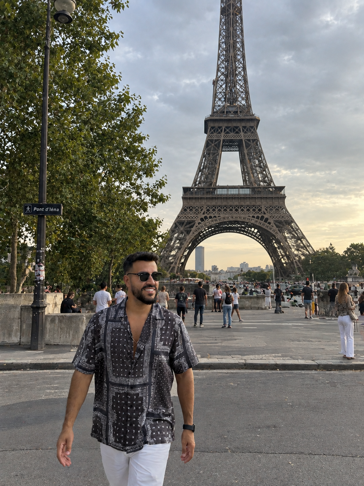

Experiência real
Eu moro na Europa e conheço destinos a partir da vivência de quem já esteve lá de perto.
Você me conta como quer viajar. Eu transformo isso em um roteiro sob medida, com lugares que fazem sentido para você — e, se quiser, posso estar ao seu lado durante a viagem.
quero meu roteiro →conhecer o Jônatas
Minha experiência vivendo e viajando pela Europa ajuda a transformar pesquisa demais, dúvidas e improviso em um roteiro claro, personalizado e possível de aproveitar de verdade.
O roteiro nasce do seu perfil, do seu ritmo e do tipo de viagem que você quer viver.
Experiência em diferentes destinos, culturas e formas de viajar.
 Escócia🇸🇰 Eslováquia🇸🇮 Eslovênia🇪🇸 Espanha🇪🇪 Estônia🇫🇮 Finlândia🇫🇷 França🇳🇱 Holanda
Escócia🇸🇰 Eslováquia🇸🇮 Eslovênia🇪🇸 Espanha🇪🇪 Estônia🇫🇮 Finlândia🇫🇷 França🇳🇱 Holanda Inglaterra🇮🇪 Irlanda🇮🇹 Itália🇱🇮 Liechtenstein🇱🇹 Lituânia🇲🇦 Marrocos
Inglaterra🇮🇪 Irlanda🇮🇹 Itália🇱🇮 Liechtenstein🇱🇹 Lituânia🇲🇦 Marrocos País de Gales🇵🇱 Polônia🇵🇹 Portugal🇸🇪 Suécia🇨🇭 Suíça🇹🇷 Turquia
País de Gales🇵🇱 Polônia🇵🇹 Portugal🇸🇪 Suécia🇨🇭 Suíça🇹🇷 TurquiaUm planejamento pensado para a sua viagem, não um roteiro genérico.
Eu moro na Europa e conheço destinos a partir da vivência de quem já esteve lá de perto.
Seu roteiro nasce dos seus interesses, ritmo, orçamento e da forma como você gosta de viajar.
Quando o destino vai além da minha experiência pessoal, faço uma pesquisa cuidadosa para construir o planejamento.
Do roteiro digital até eu literalmente ir junto com você — escolha o nível de acompanhamento que faz sentido pra sua viagem. Também monto roteiros para destinos fora da Europa, incluindo Ásia, com pesquisa aprofundada mesmo quando ainda não pisei lá pessoalmente.
Roteiro sob medida pros seus dias e interesses, entregue em PDF, com dicas de quem já testou.
Eu viajo com você: traduzo, guio e resolvo imprevistos em tempo real, do check-in ao último dia.
Roteiro + apoio na escolha de hotéis e passagens + suporte por WhatsApp até fechar tudo certinho.
Links de serviços que eu mesmo uso e recomendo pra quem viaja pela Europa. Usando esses links, você garante desconto nas suas reservas.
Internet para sua viagem com desconto pelo meu link.
acessar link →Conta e cartão para usar durante suas viagens.
acessar link →Preencha os dados abaixo e o formulário abre uma conversa comigo no WhatsApp com tudo pronto — sem precisar digitar de novo.
Respondo pessoalmente, em até 2 horas.